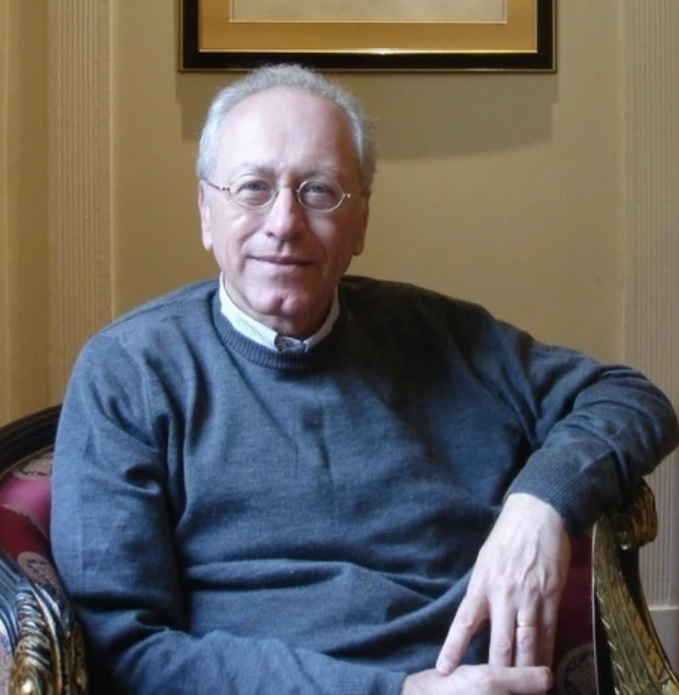

Seminário · Capítulo 4 (pp. 147–185)
Texto-base de Andrew Feenberg
“Construtivismo crítico: exposição e defesa”
Parte 1 · slides 1–20 · pp. 147–165
Jean César dos Reis Barbosa
O diagnóstico: poder, estrutura e autonomia operacional
Parte 2 · slides 21–38 · pp. 165–185
Gissele Quirino Herculano
A resposta: democratização, instrumentalização e consequências
| Introdução | pp. 147–148 | Jean |
| 4.1 Por que Marx? | pp. 149–153 | Jean |
| 4.2 A tecnologia e a teoria política | pp. 153–159 | Jean |
| 4.3 A autonomia operacional | pp. 159–165 | Jean |
| 4.4 A democratização | pp. 165–176 | Gissele |
| 4.5 A teoria da instrumentalização | pp. 176–183 | Gissele |
| 4.6 Consequências | pp. 184–185 | Gissele |

Filósofo estadunidense (n. 1943), referência internacional da Filosofia da Tecnologia. É professor emérito da Simon Fraser University (Canadá), onde ocupou, a partir de 2003, a Canada Research Chair in Philosophy of Technology.
Doutorou-se em Filosofia na Universidade da Califórnia, San Diego, em 1972, como aluno e orientando de Herbert Marcuse (Escola de Frankfurt) — daí sua leitura da dialética marxiana e da teoria crítica.
Obras-chave: Critical Theory of Technology (1991; revista como Transforming Technology, 2002), Questioning Technology (1999), Heidegger and Marcuse (2005), Between Reason and Experience (2010), Technosystem (2017) e Technology, Modernity, and Democracy (2018).
Contexto — pergunta de Tony, do 1Dime Radio (0:50), em paráfrase:
Ele pede que Feenberg fale de sua formação e de sua relação com Herbert Marcuse.
Andrew Feenberg (tradução livre, condensada):
“Nos anos 60, a filosofia americana era quase toda analítica. Um amigo me sugeriu a Universidade da Califórnia: lá estava Marcuse, ‘um cara que escreve sobre Marx e Freud’. Eu disse: qualquer cara louco o suficiente para fazer isso é louco o suficiente pra mim.”
Fonte: entrevista ao 1Dime Radio (2024), publicada no canal de Andrew Feenberg no YouTube como “Interview with Andrew Feenberg on Marcuse”.
No vídeo, “crazy enough” não soa pejorativo — soa como elogio. Três leituras possíveis:
Unir Marx e Freud destoava da filosofia americana dos anos 60, então quase toda analítica — como o próprio Feenberg diz no trecho.
“Louco” evoca o pensador heterodoxo, que atravessa as fronteiras do que o mainstream considerava filosofia “séria”.
“Louco o suficiente pra mim”: Feenberg se reconhece no projeto — vai a San Diego e começa pedindo a Marcuse uma leitura de Ser e Tempo, de Heidegger.
Leitura dos apresentadores sobre o tom da fala — não é uma tese do capítulo.
Feenberg participou dos acontecimentos de Maio de 1968, em Paris, e é coautor de um livro sobre eles: When Poetry Ruled the Streets (SUNY Press, 2001).
Sua teoria valoriza quem sofre os efeitos da técnica e age sobre ela — o tema da democratização, na Parte 2.
Em 1982, no Western Behavioral Sciences Institute (Califórnia), participou do programa que ele descreve como o primeiro a usar o computador como principal meio de ensino, e ajudou a preparar professores para moderar debates online.
A experiência ilustra a tese do livro: o desenho da técnica não é destino. O mesmo computador pode servir ao diálogo, não só ao controle.
“uma filosofia especificamente política da tecnologia” (p. 147)
Acusado de privilegiar um lado de dilemas que pretende superar, Feenberg formula proposições aparentemente contraditórias e mostra como as reconcilia — é a estrutura das seções 4.2 e 4.5.
“Neste capítulo pretendo menos persuadir do que aclarar minhas posições” (p. 148)
Quatro tradições, combinadas para dar conta da técnica concreta e da crise da civilização tecnológica (p. 147):
Contrasta um cientificismo “unidimensional” com as potencialidades da experiência cotidiana, de onde nascem as resistências.
Mostra como o capital molda as máquinas e a organização do trabalho — a desqualificação (cf. Noble, citado na p. 157).
O construtivismo social mostra projetos alternativos e atores em disputa. Tem papel essencial, mas Feenberg quer “corrigir sua subestimação das características estruturais da sociedade moderna” (p. 148).
Crítica da técnica moderna como razão instrumental. Feenberg aproveita a crítica, não a ontologia. (O “fundo de reserva” é conceito de Heidegger em A questão da técnica, não deste capítulo.)
“O construtivismo crítico ‘desontologiza’ essas filosofias da tecnologia, conservando sua crítica da racionalidade” (p. 147) — e reconhece o valor da ciência e da tecnologia modernas, sem descartar a modernidade.
Contexto — pergunta de Tony (2:02:00), em paráfrase:
Ele pede que Feenberg feche com a relação ambivalente de Marcuse com Heidegger, de quem foi aluno.
Andrew Feenberg (tradução livre, condensada):
“Ele era ambivalente: aprendeu com Heidegger, mas não aceitou que ele, nazista, se recusasse a reparar o erro. Diante da resposta de Heidegger, escreveu: ‘Nenhum filósofo pode se permitir dizer uma coisa dessas’.”
Ponte com o slide 8: Heidegger é fonte do construtivismo crítico, mas lida de modo crítico — e “desontologizada”.
“Todo mundo acredita em 90% do marxismo; os marxistas são aqueles que também acreditam nos outros 10%” (p. 149)
Frase de um estudioso marxista, lembrada por Feenberg.
A grande descoberta de Marx: o papel fundamental da economia na história e na vida social.
O socialismo como controle democrático da economia. Duas objeções: a ineficiência do planejamento e os “imperativos” da tecnologia — a gestão da técnica seria incompatível com a democracia.
A noção de “atores” livrou o estudo da técnica do determinismo (Pinch & Bijker, 1987): há projetos alternativos, com impactos sociais diferentes, disputados por interesses e ideologias.
“Nenhum imperativo tecnológico suprime uma organização mais democrática da economia” (p. 149)
Pergunta-guia
“A estrutura pode ser incorporada à teoria social sem uma vez mais reificar o poder?” (p. 150)
Ainda é preciso descrever o poder capitalista. Cada crise está “radicada no exercício desmedido do poder capitalista sobre a evolução do sistema técnico” (p. 151).
A indústria de combustíveis fósseis tem poder tão imenso que nenhum conjunto de evidências científicas anulou, até agora, seu domínio sobre o sistema energético.
A Internet, que ampliou o debate público, está sob controle de poucas grandes corporações e se incorpora ao aparato de propaganda de corporações e governos.
Desregulamentação neoliberal e políticas tributárias geraram desigualdades de renda e de poder — e hostilidade contra a própria racionalidade; a narrativa volta como teoria da conspiração distópica. Essa crise desarma a sociedade diante das outras duas.
Marx concebia o capitalista como “um simples agente de estruturas anônimas” (p. 152)
A contribuição de Marx é “sua descoberta da dimensão política na tecnologia” (p. 153) — e não opor política e técnica, valor e fato, ideologia e racionalidade.
Contexto — pergunta de Tony (por volta de 55 min, retomada neste trecho), em paráfrase:
Críticos descartam Marx pela “teleologia”, como se o socialismo fosse mecanicamente inevitável. É isso?
Andrew Feenberg (tradução livre, condensada):
“Pensar o marxismo como um sistema mecânico, em que a história avança sozinha, não é marxismo. O problema básico de Marx é passar de uma fase em que as leis da economia prevalecem sobre os seres humanos para outra em que eles organizam a própria existência — e isso requer consciência.”
Ponte com o slide 13: a dominação “impessoal” só muda com outras estruturas (pp. 152–153).
Nos séculos XIX e XX, os especialistas serviram às estruturas administrativas: as disciplinas técnicas minimizaram perigos, e temas cientificamente insolúveis foram enviesados a favor das indústrias (Fressoz; Bensaude-Vincent). Hoje esse legado é discutido em público: “O debate político sobre tecnologia é, portanto, inevitável.” (p. 154)
1 × 2: se sistemas diferentes convergem para o controle autoritário, a técnica não seria um imperativo? E, se não é, por que ondas de inovação produzem estruturas de controle semelhantes? (p. 155)
3 × 1: as disciplinas racionais se parecem em toda parte — seria a racionalidade a causa da convergência? Marxistas costumam culpar a irracionalidade, capitalista ou burocrática (p. 156).
“Racional” aqui = baseado em evidências e logicamente elaborado; nada a ver com “razão pura” (p. 156).
Os soviéticos não criaram tecnologia nem gestão próprias: adotaram as do capitalismo ocidental. A tecnologia funcionou como “vetor de difusão cultural” (Fleron, 1977): as influências sociais viajam dentro das próprias disciplinas e artefatos.
Da desqualificação do trabalho. A tecnologia “materializa o conteúdo intelectual da produção, anteriormente depositado nas mentes dos artesãos”; as máquinas barateiam, padronizam e comandam o trabalho e tiram dos trabalhadores o recurso cultural de disputar o poder (Noble, 1984).
Não é ideologia nem interesse, mas considerações técnicas “racionais e, ainda assim, condicionadas pelos termos da competição e do controle capitalistas”.
Racionalização e desencantamento: a máquina perde associações simbólicas, “a forma é ditada pela função”, e só a eficiência sobrevive como norma. Risco: o determinismo, como no próprio Weber. Por isso “um novo conceito de poder se faz necessário” (p. 159).
Em O capital (cap. 13), a cooperação aumenta a produtividade e, em grande escala, exige liderança formal. A administração ganha a função de coordenar — e o poder de se apropriar do valor criado pela cooperação e de ditar projetos de máquinas que perpetuam seu controle (p. 159).
“Assim, Marx não atribui a gestão autoritária à tecnologia, mas sim o contrário.” (p. 159)
Três “tipos ideais” de controle — na vida real, as formas mistas são mais comuns (p. 160):
Impõe a coordenação sem responsabilidade recíproca para com os subordinados.
Os subordinados escolhem o coordenador de sua própria atividade.
Não discutido por Marx: subordinados com habilidades complexas preservam autonomia e o direito formal de assessorar quem os coordena.
Na empresa capitalista, a política só reproduz a norma da eficiência: a propriedade não tem obrigações além do sucesso financeiro — nem com trabalhadores, nem com a comunidade. Sócios e conselhos abrem mão da autoridade em favor da administração, desde que as metas financeiras sejam atingidas: é a autonomia operacional da gestão (pp. 160–161).
Uma característica formal, que “especifica procedimentos sem especificar um objetivo substantivo particular” (p. 161)
Instituições públicas precisam de uma política substantiva que as legitime — na escola, a educação segundo algum padrão. Mas os meios parecem neutros: como o capitalista diante do valor de uso, burocratas e professores podem seguir procedimentos-padrão indiferentes ao valor que norteia seu trabalho. O grau dessa indiferença depende do sistema de controle (pp. 161–162).
Confiança na experiência docente para julgar os alunos; reuniões entre administração e representantes dos professores; compromisso amplo com o valor da educação (pp. 162–163).
A educação vira medidas quantitativas — provas, rankings — que “simulam os objetivos financeiros”; a gestão colegiada dá lugar à autonomia operacional de uma burocracia (p. 163).
“A desmoralização resultante disso é notória.” (p. 163)
O padrão se espalha: os indivíduos ficam submetidos ao “poder impessoal dos sistemas racionais” e reagem de modo construtivo ou, quando a resistência se contamina de irracionalidade, destrutivo e até autodestrutivo (p. 163).
Decidir sem consultar os afetados é injusto e nocivo aos seus interesses concretos: quem comanda enxerga poucas soluções viáveis; outras seriam viáveis sob controle a partir da base (pp. 163–164). No pós-fordismo a lógica fica: um padrão que centraliza o poder numa elite administrativa (p. 164).
A centralização em grandes corporações gerou inovações para coletar dados pessoais: vigilância e publicidade direcionada. As plataformas intensificam a autonomia operacional e reduziram a livre expressão, em grande parte, a mecanismo de propaganda. Defensores da privacidade pedem a volta à estrutura descentralizada anterior a Google, Amazon e Facebook.
Quando a gestão pode ignorar externalidades, soluções eficientes têm consequências desastrosas para o entorno. Consultada, a comunidade provavelmente escolheria soluções menos poluidoras; na prática, recorre à justiça.
Síntese da Parte 1
“a tomada de decisões baseada em critérios de racionalidade e eficiência não é, de fato, neutra” (p. 165)
E a democratização não é só procedimento: está ligada a fins substantivos. Como transformar essa racionalidade? → Parte 2, com Gissele.
Parte 2 · Gissele Quirino Herculano
O que a Parte 1 mostrou
A técnica é racional, mas sua racionalidade é condicionada pelo poder: a autonomia operacional de quem a gere.
Como os afetados pela técnica entram no seu projeto? E como pensar um objeto que é, ao mesmo tempo, mecanismo causal e fato social?
Por enfatizar a autonomia operacional, o construtivismo crítico se ocupa da dinâmica do poder no tecnossistema. Ambientalismo e privacidade não são as únicas questões, mas têm enorme repercussão (pp. 165–166).
Na esfera pública, a experiência negativa com a técnica é articulada criticamente; os excluídos buscam reverter os danos de projetos anteriores. Ex.: a poluição, desprezada na maior parte da história industrial — hoje opinião pública e regulação obrigam as empresas a cuidar da saúde das comunidades (p. 166).
Cada nova restrição às empresas diminui em algum grau sua autonomia operacional. No limite, o sistema empresarial é forçado a servir melhor aos interesses públicos substantivos (p. 166).
“No extremo, essa consequência procedimental geraria um sistema técnico genuinamente democrático.” (p. 166)
A demanda por democratização é…
“uma reivindicação em favor da ampliação e do reconhecimento formal das contribuições de não especialistas” (p. 167)
— e não uma recusa da importância da expertise.
Coletivos democráticos também tomam péssimas decisões; mas a experiência histórica com ditadura e democracia nos faz preferir a segunda. A democratização técnica aplica essa preferência ao tecnossistema (pp. 167–168).
Quase sempre a posteriori, com a tecnologia já em uso: consumidores reclamam ou boicotam; trabalhadores exigem proteção; hackers modificam sistemas; comunidades responsabilizam judicialmente empresas e agências; manifestantes defendem novas políticas, como na energia (p. 168).
Resultado: uma superação (Aufhebung) — novo projeto, interesses mais amplos. É a mudança no “código técnico”, “o tipo ideal que descreve a interseção das exigências sociais e técnicas” (p. 169)
Em Aristóteles, as coisas têm propriedades essenciais estáveis e potencialidades que se atualizam no seu desenvolvimento. O senso comum moderno continua largamente aristotélico: na linguagem cotidiana, valores e fatos coexistem, e ela é teleológica (pp. 169–170).
A percepção pública dos danos ambientais usa noções não científicas, mas intuitivamente óbvias — a “saúde” de um rio ou de uma floresta. Para a ciência estrita, não há razão para preferir uma coisa à outra; a experiência concreta opera por outros princípios (p. 170):
Esses apelos são “desontologizados” e traduzidos em soluções técnico-científicas: a harmonia com a natureza vira norma empírica, sem metafísica. Não há condição natural a restaurar (pp. 170–171).
“O sentido reside para além da natureza, não no retorno a ela.” (p. 171)
Trecho 1 — Feenberg (tradução livre):
“Não é que Marcuse diga que a ciência é falsa ou errada: ela tem poderes, mas também limitações, que importam quando saem do campo da ciência e chegam ao mundo cotidiano.”
Trecho 2 — Feenberg (tradução livre):
“Antes da modernidade, a ciência era pensada a partir de Aristóteles. Nela, os objetos tinham potencialidades: o traço normativo, aquilo para o qual a coisa tende e quer se desenvolver.”
Ponte com o texto: as “verdades existenciais” da natureza, ao lado das “verdades matemáticas”, segundo Marcuse (citado na p. 172).
A barreira entre senso comum e ciência não é absoluta. Na crise da água de Flint (Michigan), o chumbo foi identificado pela combinação de observação direta — cor e odor da água — com os testes de um cientista que ajudou a comunidade e deu à “água suja” uma causa e um nome (p. 171).
Um elemento da tabela periódica, com peso atômico e valência — talvez também na opinião do próprio cientista (p. 171).
Uma ameaça ao desenvolvimento humano “normal”: ao potencial dos cérebros em desenvolvimento das crianças da cidade (pp. 171–172).
Para a comunidade, “o chumbo era um intruso ameaçador e uma evidência de discriminação racial” (p. 171)
É uma ampliação do conceito de “objeto de fronteira” (Star & Griesemer, 1989). Na teoria crítica, Marcuse: além das “verdades matemáticas”, há as “verdades existenciais” da natureza. O movimento climático segue a mesma trilha: as pessoas leem sua experiência com o clima também à luz de estudos científicos, apesar da propaganda anticiência da indústria (p. 172).
Entre leigos e especialistas, constroem-se pontes em torno de conceitos como “saúde” e “segurança”. Seu efeito é “traduzir valores em fatos; demandas formuladas discursivamente, em especificações técnicas” (p. 172).
O percurso completo conduz o desenvolvimento técnico adiante, uma iteração após a outra (p. 173). Iteração: o resultado de uma ação vira objeto de uma nova ação (N.T. 22).
As intervenções públicas são “metades incompletas” de um diálogo que precisa acontecer entre o público e os especialistas (pp. 172–173). O que parece “irracional” para a racionalidade técnico-científica dominante entra no projeto técnico e conforma um futuro racional (p. 172).
“O público não teria qualificação.” De fato, há ideias perigosas, como o movimento antivacina: a rejeição da ciência ameaça a democracia, que exige um público capaz de interagir produtivamente com os especialistas.
Não é preciso submissão cega — mas as contestações “devem apontar problemas reais passíveis de solução, e não rejeitar a racionalidade” (p. 173).
Flint está em sintonia com intervenções muito mais amplas: o ambientalismo mudou a indústria e segue impulsionando mudanças, sobretudo na energia.
Muitas mudanças viraram procedimento técnico padrão e sua origem em protestos foi esquecida: o “inconsciente tecnológico” oculta os vestígios dos movimentos.
Moral (p. 174): os fenômenos mais visíveis, como o antivacina, não representam o conjunto. Especialistas e disciplinas não são perfeitos — precisam de correções periódicas.
Objeção: a teoria exagera a divisão entre gestores e especialistas, de um lado, e subordinados e leigos, de outro; se dialogam, o poder seria irrelevante.
Resposta: isso ignora o legado da autonomia operacional — tradições técnicas de um mundo que silenciava trabalhadores e comunidades — e empresas que hoje lucram com ela: Exxon, Purdue, Volkswagen, Boeing (petróleo, farmacêutica, automóveis e aviação; N.T. 23).
De fato, nem debate interminável nem concessões caracterizam a técnica. Ocorre algo mais interessante: a concretização (Simondon) — inovações que combinam objetivos de grupos com agendas diferentes num novo projeto e num novo código técnico.
Ex.: “o carro elétrico combina as demandas aparentemente opostas de ambientalistas e passageiros” (p. 175)
Um dispositivo formalmente enviesado não se explica por uma descrição internalista, centrada em mecanismos e funções: falta a relação com o contexto social — que pesa no projeto e tem dimensão política (p. 176).
O objeto técnico pode ser concebido como “uma mônada, cujo projeto técnico reflete o mundo do qual participa” (p. 176)
Como deduzimos a altura média das pessoas de épocas remotas pela altura de suas cadeiras e mesas.
O problema: especificações mecânicas rígidas versus o material flexível das convenções e valores. “Os departamentos de engenharia e de filosofia não se comunicam!” (p. 177)
Duas proposições a reconciliar (p. 177)
1. O pensamento, a ação e os artefatos técnicos envolvem o controle da natureza por mecanismos causais.
2. O pensamento, a ação e os artefatos técnicos refletem significados e valores sociais e culturais.
Lembra a teoria ator-rede: a “associação” simplifica o objeto para isolar propriedades causais; a “delegação” incorpora as normas que dão significado e o script do usuário (Callon, 1987; Latour, 1992). Feenberg identifica as operações envolvidas: uma fenomenologia da ação técnica — a teoria do “duplo aspecto” (pp. 177–178).
Hoje: “funcionalização causal”
Descontextualização (separar o objeto natural do seu ambiente) e redução (remover o prescindível). Ex.: serrar a árvore e tirar galhos e casca (p. 178).
É a “instrumentalidade” criticada por Frankfurt: essencial à produção técnica e com potencial violento — mas não se sustenta sozinha.
Hoje: “funcionalização cultural”
Recontextualização na rede sociotécnica e atribuição de significado social. Ex.: escolher quais árvores derrubar e definir a largura e a espessura que qualificam as peças como “tábuas” (pp. 178–179).
É aqui que o conteúdo social dá sentido técnico às operações primárias.
Ganho: trazer a crítica frankfurtiana da razão instrumental para o estudo empírico da tecnologia (p. 178).
“as duas instrumentalizações não são processos separados, mas aspectos de um mesmo processo” (p. 179)
“Ainda não estou certo de que isso resolverá a questão.” (p. 180)
O erro, diz Feenberg, foi ignorar o senso comum instrumentalista ocidental: causas teriam base na natureza; significados sociais seriam meras convenções. Daí a máquina que funciona igual em Nova York e em Pequim (p. 180). Essa aparente universalidade alimenta tanto argumentos tecnocráticos quanto críticas distópicas — a “jaula de aço” de Weber (N.T. 24) (pp. 180–181).
“Esse próprio binarismo tem uma causa social.” (p. 181)
O mastro totêmico e a televisão são meios de comunicação; só a TV pode ser descrita como mecanismo causal sem referência à sua inserção social — efeito das disciplinas técnicas modernas, uma realidade institucional mal entendida quando se ignora o viés (p. 181).
Como os valores entram nas especificações técnicas (pp. 181–182):
Crítica: a teoria não deixaria espaço para a agência dos “não humanos”. Resposta: ela reconhece essa agência, mas também a especificidade do técnico — a primazia do humano numa relação de manipulação, distanciada, sem a reciprocidade das relações humanas (p. 182).
Sujeito e objeto se co-constroem: “O carpinteiro se faz carpinteiro por meio das práticas e das ferramentas do ofício.” (p. 182)
A tecnologia disponível configura o mundo do sujeito e o que significa ser sujeito nele (pp. 182–183).
Consequências não intencionais, como a poluição, voltam para atormentar o ator: “antiprogramas”, confrontados pela resistência pública numa “relação de retroalimentação” (p. 183).
O estudo da tecnologia é hoje politicamente relevante. Muito do debate refuta erros cognitivos — a natureza “conquistada”, a “grande divisão” entre humanos e natureza. É útil, mas olhar só para as crenças joga a responsabilidade sobre a espécie humana (p. 184).
“Os erros cognitivos não explicam as estruturas de poder” (p. 184) — responsáveis pela crise civilizacional em que vivemos.
O movimento desencadeou uma subjetividade radical, voltada a potencialidades e ao longo prazo, com outra noção de tempo e de política. Os manifestantes exigem um novo código técnico da indústria e mudanças estruturais — não reformas pontuais compatíveis com a permanência do neoliberalismo.
Como diante do movimento trabalhista no século XX, o capitalismo é chamado a se adaptar. A regulação já corroeu sua margem de manobra, mas ele nunca enfrentou a exigência de reformar por inteiro uma tecnologia basilar como o sistema energético — agora, todo o sistema precisa mudar “do dia para a noite”.
A reflexão filosófica sobre a tecnologia deve instruir o pensamento político; as velhas divisões disciplinares, que deixavam a técnica aos tecnólogos, não fazem mais sentido. A questão central é a natureza da racionalidade que se manifesta na tecnologia que sustenta o mundo social (p. 185).
“Descobrir o viés dessa racionalidade corresponde à tarefa crítica do estudo da tecnologia em nossos dias.”
Andrew Feenberg (p. 185)
Obrigado! — Jean e Gissele